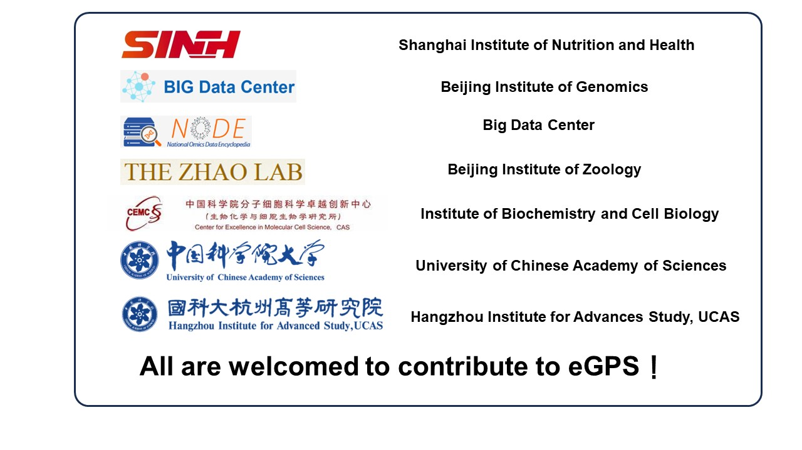

| evolutionary Genotype-Phenotype Systems (eGPS) | |||||||||||||||||||||||||||||||||||
| Version: 2.1.97 | eGPS2 development team | ||||||||||||||||||||||||||||||||||
|
|||||||||||||||||||||||||||||||||||
| eGPS1 development team | |||||||||||||||||||||||||||||||||||
|
|||||||||||||||||||||||||||||||||||
If you find the functionalites of the software has any form of help to your research, please cite the following literatures.
How to cite 2. Dalang Yu, Xiao Yang, Bixia Tang, Yi-Hsuan Pan, Jianing Yang, Guangya Duan, Junwei Zhu, Zi-Qian Hao, Hailong Mu, Long Dai, Wangjie Hu, Mochen Zhang, Ying Cui, Tong Jin, Cui-Ping Li, Lina Ma, Language translation team, Xiao Su, Guoqing Zhang, Wenming Zhao, Haipeng Li, Coronavirus GenBrowser for monitoring the transmission and evolution of SARS-CoV-2, Briefings in Bioinformatics, 2022; bbab583 https://doi.org/10.1093/bib/bbab583  |